| Hello and welcome to Oklahoma City - I hope you will feel at home here. Oklahoma City may not be the most glamorous city, but it is a
friendly city and a very nice place to live. I created this
page to help my foreign friends adjust to life in Oklahoma, and the
United States. I hope you will love it like I do!
Here are the topics you'll find on this page:
|
||||||
OrientationOklahoma City is a big city - when measuring by area, that is.
Oklahoma City covers 621 square miles. However, I know that miles mean
nothing to most According to Wikipedia, OKC ranks 8th largest in the nation by land area,
and 30th in the nation for the number of residents. According to the
2010 You will often hear people speak of "the Metro area" when talking
about Oklahoma City. This is an abbreviation for Metropolitan Area and
describes OKC I encourage you to read more about your new home town on Wikipedia.
I would also encourage you to read more about the
founding of the city during |
||||||
More State InfoThe original residents of the USA were the American Indians. There are
still The name Oklahoma has meaning that is based in our Native American In America, in addition to our American flag, each state also has its own |
This is our state flag. 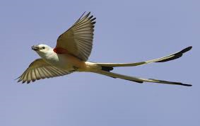 The state bird is the Sissor-tailed Flycatcher. It is a beautiful bird. |
|||||
Fun FactsThe capitol building at 23rd and Lincoln is the only capitol in the nation with a working oil well on its grounds. OKC has been ranked as the Most Affordable American City by Forbes Magazine
and the city with the Lowest Unemployment Rate in the Nation Major employers in the area include oil & gas companies, Tinker Air Force Base, and The University of Oklahoma. Oklahoma City is 1,285 feet above sea level; has an average annual rainfall of 32 inches per year; and an average of more than 300 days of sunshine per year.
|
||||||
TransportationThe streets in Oklahoma City are arranged in a grid system that makes it
very easy to find your way around. I have created a map below to help |
||||||
|
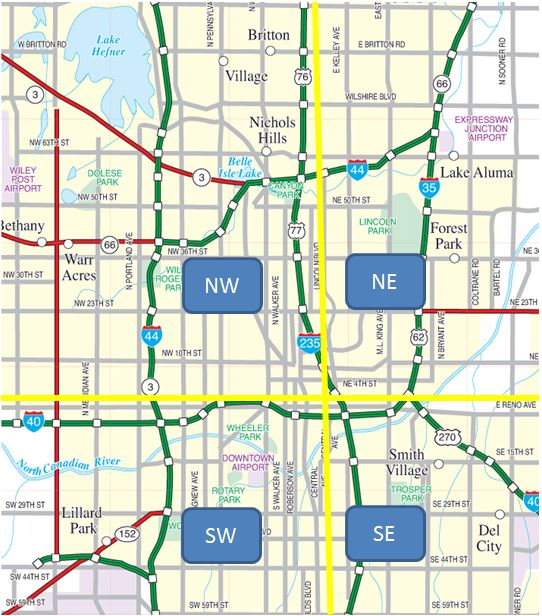 |
In downtown OKC, somewhere near Reno Ave and Lincoln Blvd is the "zero point" of the grid. Street numbers begin counting from 1 in both directions. House numbers count upward in groups of 100 per city block. I have drawn a diagram below to help explain this better. 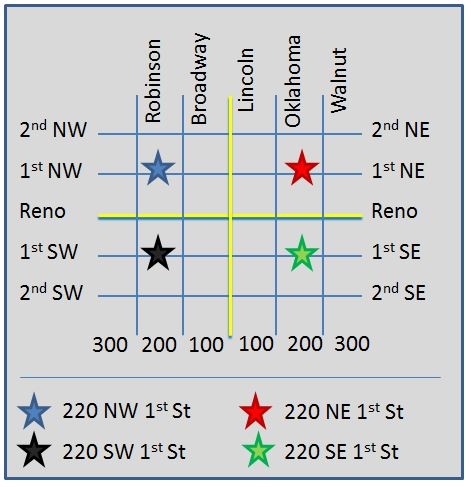 |
|||||
Getting Around |
||||||
| OK, I'll be honest - the public transportation system in OKC leaves a lot to be desired. Many of you came from cities where you did not need a car because public transportation was so convenient. That is not the case in OKC. The truth is, it is very hard to live here if you cannot drive. |
||||||
| But that doesn't mean it is hopeless! You will learn the bus system, you will make friends who have cars, and you will find lots of things near OCU that is within easy walking distance. View the bus information at GoMetro. |
The city has a plan in place to add 6 miles of new
sidewalks to the city
|
|||||
| Here are numbers for a few taxi companies around town: Thunder Cab
(405) 600-6161 |
|
|||||
FoodThere are lots of options for food in Oklahoma City. We have many
different kinds of restaurants, I encourage you to use your time in
America to experience as many
different styles of food as possible. |
||||||
Groceries |
||||||
There is at least one grocery store near OCU that carries a good selection of
International foods:
|
Another grocery store near OCU is the Wal-Mart Neighborhood Market, which is smaller than a Wal-Mart Super Center, but offers very good prices. It is north of NW 23rd St, just west of N Penn Ave.
|
|||||
Restaurants |
||||||
| There are so many fun an interesting restaurants in town. I will list some
restaurant review sites, and will give a list of some of the types of food you should try.
|
Urban
Spoon often has pictures of the food and menus which can Restaurant reviews by "The Food Dude"
|
|||||
| 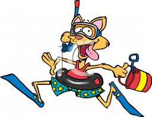 |
||||||
Things to Do
|
||||||
| OKC
Visitors Bureau- This site has a LOT of information about things to do in and around Oklahoma City. Metro
Family Magazine - This site is geared toward families with kids Travel OK - Links and information about the attractions of our area. Bricktown is a popular historic entertainment area which boasts many A fun neighborhood called the Paseo
Arts District, host a fun event
|
There is an area of OKC named "The
Adventure District" which contains the Zoo, the hands on Science Museum, a racetrack, and more. Chesapeake
Arena - This is a large stadium in Bricktown which hosts Each week the newspaper lists upcoming activities here. A nice cheap night out can be found at Oklahoma
Shakespeare in the The Myriad Botanical Gardens host free concerts, movies, and other events. Here's one
more link to some of the area events.
|
|||||
Making FriendsThere are many people in Oklahoma City who feel a special love for OCU
Baptist Collegiate Ministry - Located right beside the campus at NW
Baptist Church - This is a large in the area which is the home church for Heritage Baptist Church -
This church has a very active International
|
If your idea of making friends includes the furry kind, be sure to visit my friends at the OKC Humane Society. |
|||||
AdventuresOKC
Riversport near Bricktown has many exciting things to do. They For even more fun try
the SandRidge Sky Trail - the tallest adventure Rocktown rock climbing gym
offers classes to teach you the basics
|
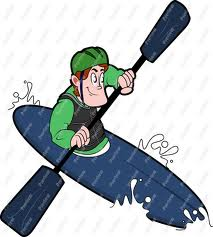 |
|||||
Must-See Local ActivitiesThere are a few things that you will only find in a few parts of the
world, Rodeo - Rodeos are a lot of fun, and they are something
that most of my Pow Wow - A Pow Wow is a Native American dance gathering which Monster Trucks - The Monster
Truck jam comes to OKC every February.
|
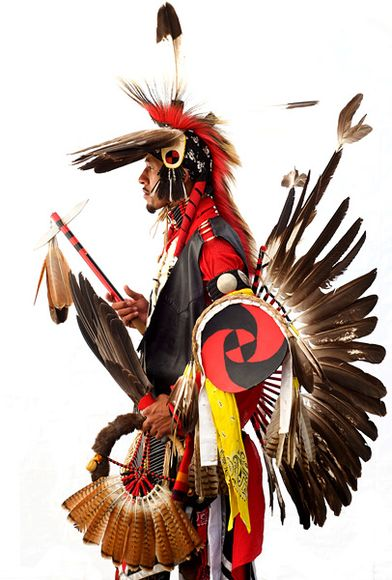 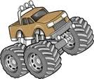 |
|||||
Further OutWichita Mountains Wildlife Refuge It is about a 2 hour drive from OKC to the visitor center inside
the The
park is full of hiking trails, picnic spots, and beautiful drives. 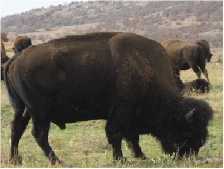 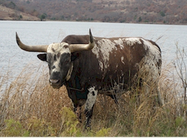 |
These are pictures I have taken in the Wichita Mountains Wildlife Refuge
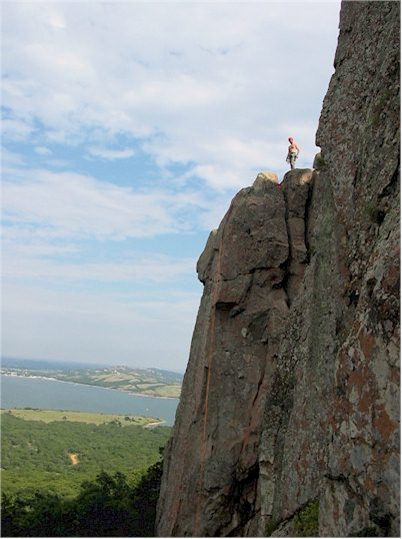 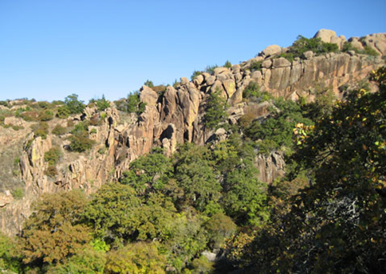 |
|||||
|
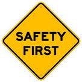 |
||||||
SafetyThere are a few dangers in the area that should not frighten you, you just need to be aware of them. By the time you get to the end of this sectionyou may want to pack your suitcase and return to your home country. Please don't be discouraged! It is better to be prepared for something that will probably never happen than to be surprised by something which could have been avoided.
|
||||||
Tornado Safety |
||||||
| Tornados can be serious business in Oklahoma, so
it pays to learn how best to prepare for them. Tornado season is from March through May. We have some very talented weather forecasters who are usually |
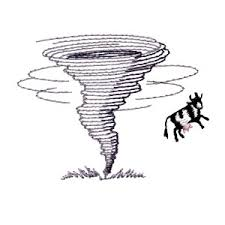 |
|||||
| Please be
aware - every Saturday at noon (if the weather is nice) the city tests the tornado sirens. Please don't be scared of this! But if you hear those sirens at any other time than Saturday at noon, you should take precautions.
|
||||||
| Be aware of some of the online weather resources for
information. Sometimes the power goes out when a storm approaches so it is good to know how to find information on a smart phone. News Channel 4's live weather coverage can be found by searching for, "KFOR Live Streaming". Find Channel 9's coverage by searching for, "News9 Live Stream". |
Factoid: Tornado Alley refers to a strip of land going
north to south that covers the northern region of Texas, Oklahoma, Kansas, Nebraska, Iowa, the eastern edge of Colorado, southwest tip of South Dakota and the southern edge of Minnesota. Tornadoes in this area typically occur in the late spring. |
|||||
| Preparation sites: FEMA -> http://www.ready.gov/tornadoes Red Cross -> http://www.redcross.org/prepare/disaster/tornado OKC -> http://www.okc.gov/prepare |
Please be aware that the tornado sirens sound each time a new warning has been issued. There is no "all clear" signal. Take shelter on the lowest level of your home in an interior room. |
|||||
|
|
||||||
Flash Floods |
||||||
| Another weather danger we sometimes see are flash floods. This happens when we get a very heavy rain. People can sometimes be hurt by driving into deep or flowing water. According to Wikipedia, it only takes 2 feet of fast flowing water to sweep an SUV off the road. Avoid driving in flash flood conditions. Do not drive into flowing water. |
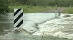 If you are on foot, do not take cover in a culvert. A culvert is a large drain that allows water to flow under a road. |
|||||
|
|
||||||
Spiders & Snakes |
||||||
| There are two types of spiders in Oklahoma which are poisonous. These are Brown Recluse (also called Fiddleback) and Black Widow. Here is a link to more information about these and other spiders you may see in Oklahoma. Here is a great article about spider bites from The Oklahoman. Snakes generally only live in the rural areas, not in Oklahoma City. |
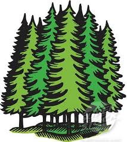 Don't worry! You won't likely see these critters in the city. I just want you to know they exist so that you will be prepared. |
|||||
|
|
||||||
General Safety |
||||||
| Oklahoma City is a relatively safe city, but as an any city, there are certain precautions that everyone should take. Safety Tips:
|
If you feel concerned while on campus, the Oklahoma City University |
|||||